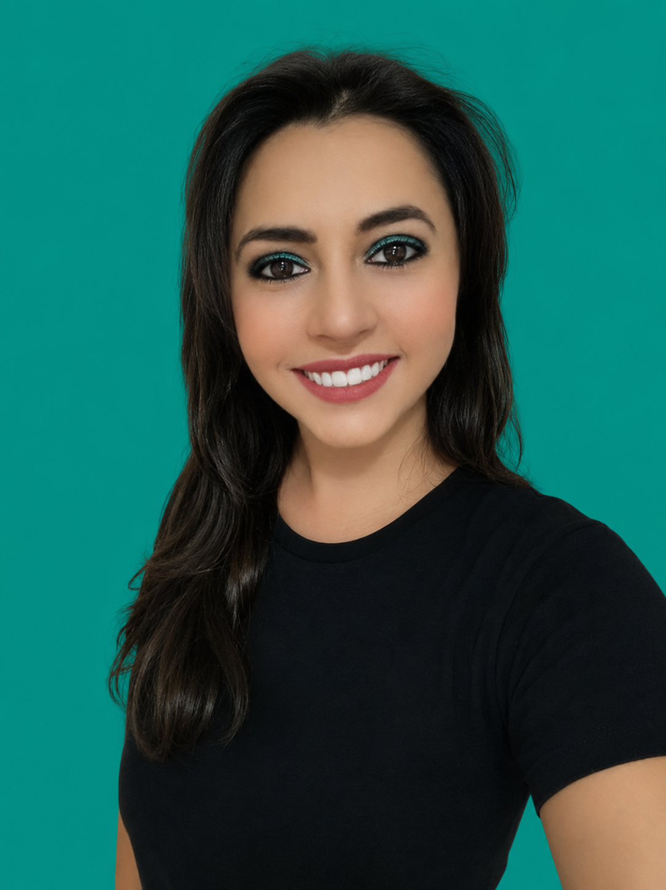

Helena Pacheco
FISIOTERAPEUTA
CREFITO 8 218374 F
Toque nos botões para conectar
✨ Especialidades
Drenagem Linfática
Estimula o sistema linfático a trabalhar de maneira mais acelerada.
Promove a redução de líquidos (inchaços), ativa a circulação sanguínea e o sistema imunológico, desintoxicação, combate a celulite e inflamação sistêmica.
Promove a redução de líquidos (inchaços), ativa a circulação sanguínea e o sistema imunológico, desintoxicação, combate a celulite e inflamação sistêmica.
Massagem Terapêutica
Massagem com intensidade profunda.
Indicada para tensão muscular. Promove o alívio da dor e fadiga muscular, reduz o cortisol, ativa a circulação sanguínea.
Indicada para tensão muscular. Promove o alívio da dor e fadiga muscular, reduz o cortisol, ativa a circulação sanguínea.
Tui Ná
Massagem Chinesa de cunho terapêutico e preventivo que atua sobre os pontos e meridianos da acupuntura para disfunções físicas e emocionais, agudas e crônicas.
Indicado para: Estresse, insônia, ansiedade, dores musculares, ligamentares e articulares, dor de cabeça e constipação.
Indicado para: Estresse, insônia, ansiedade, dores musculares, ligamentares e articulares, dor de cabeça e constipação.
Acupuntura
Técnica que engloba o corpo integralmente, beneficiando o bem-estar físico e emocional. Ao longo do nosso corpo possuímos canais energéticos (meridianos) que dizem respeito à saúde e funcionalidade de todos os nossos órgãos e vísceras. O meridiano recebe este estímulo como um "impulso elétrico".
Auriculoterapia
O pavilhão auricular é irrigado por vasos sanguíneos e nervo Vago possibilitando a conexão de áreas reflexas de todo o corpo no tratamento de doenças autoimunes, regulação neurovegetativa, equilíbrio emocional, dores agudas e crônicas, regulação intestinal e vícios (ex: alcoolismo, tabagismo, compulsão alimentar).
Ventosas de Fogo
Aplicadas sobre a pele e, através de um vácuo, o qual gera uma sucção, propicia a limpeza do sangue ajudando na remoção das toxinas acumuladas no organismo, promovendo a circulação sanguínea e energética; fortalecimento do sistema imunológico e a funcionalidade dos órgãos e vísceras, além do alívio das tensões musculares.
Cone Chinês / Hindu
Através do calor desobstrui os canais auditivos, nariz e garganta. Promove relaxamento dos músculos da face e pescoço.
Indicado para: Desordens musculares da articulação temporomandibular (ex: bruxismo), dores de cabeça, estresse, insônia e afecções respiratórias.
Indicado para: Desordens musculares da articulação temporomandibular (ex: bruxismo), dores de cabeça, estresse, insônia e afecções respiratórias.
Moxabustão
Técnica milenar da Medicina Tradicional Chinesa que visa colocar calor nos acupontos, restaurando o equilíbrio energético e sanguíneo (Qi/ Xue) em casos de síndromes causadas por frio e umidade. Busca tonificar pontos que aumentam a energia interna. A erva mais utilizada é a Artemísia.
Pré e Pós-Cirúrgicos
Atendimento especializado para procedimentos estéticos e ortopédicos.
A partir da avaliação, o pré e pós-operatório pode incluir Drenagem Linfática, Liberação Miofascial Cicatricial, Acupuntura/Auriculoterapia para alívio da dor, Mobilização Articular, Fortalecimento Muscular, Treino de Marcha e uso de Dispositivos Auxiliares.
A partir da avaliação, o pré e pós-operatório pode incluir Drenagem Linfática, Liberação Miofascial Cicatricial, Acupuntura/Auriculoterapia para alívio da dor, Mobilização Articular, Fortalecimento Muscular, Treino de Marcha e uso de Dispositivos Auxiliares.
Access Mtvss
A Técnica MTVSS (Molecular Terminal Valence Sloughing System ou Sistema de Desprendimento da Valência Terminal Molecular) é um processo corporal do Access Consciousness realizado por meio da imposição de mãos.
Aplicação: O cliente permanece deitado na maca enquanto o profissional aplica toques suaves em regiões específicas, como articulações e órgãos para liberar os bloqueios.
Inicialmente, ativamos o sistema imunológico e as demais ativações variam de acordo com a queixa do cliente (p. ex: sua queixa pode ser física: dor localizada – muscular ou articular, traumas ortopédicos, processos cirúrgicos; ou emocional: ansiedade, angústias, depressão, insônia, luto e outros).
Ao final da sessão o cliente sente-se relaxado e ao passar dos dias refere melhora do desequilíbrio devido ao reestabelecimento da estrutura molecular.
Aplicação: O cliente permanece deitado na maca enquanto o profissional aplica toques suaves em regiões específicas, como articulações e órgãos para liberar os bloqueios.
Inicialmente, ativamos o sistema imunológico e as demais ativações variam de acordo com a queixa do cliente (p. ex: sua queixa pode ser física: dor localizada – muscular ou articular, traumas ortopédicos, processos cirúrgicos; ou emocional: ansiedade, angústias, depressão, insônia, luto e outros).
Ao final da sessão o cliente sente-se relaxado e ao passar dos dias refere melhora do desequilíbrio devido ao reestabelecimento da estrutura molecular.
🎓 Formação Acadêmica
Helena Cristina Pacheco Ferreira é fisioterapeuta, com uma trajetória acadêmica construída a partir da integração entre fisioterapia neurofuncional, saúde do idoso, terapias manuais, práticas integrativas e gestão em saúde.
Graduação & Pós-Graduações
Graduação em Fisioterapia
Centro Universitário UniDomBosco
2010 a 2015
Especialização em Fisioterapia Neurofuncional
Faculdade Inspirar
2015 a 2017
MBA em Gestão, Auditoria e Qualidade em Saúde
Faculdade Inspirar
2018 a 2019
Especialização em Acupuntura
Faculdade de Tecnologia IBRATE
2021 a 2023
Formação Técnica & Complementar
Possui formação técnica em Administração, Segurança do Trabalho e Socorrismo, contribuindo para uma visão multidisciplinar e abrangente.
Tui-Ná (Terapia Manual Chinesa)
Reabilitação Vestibular
Terapia por Contensão Induzida
Órteses & Adaptações
Tecnologia Assistiva
Gestão da Qualidade
Gestão de Riscos
Indicadores de Desempenho
Gerontologia
Saúde Integrativa
Cuidado Voltado ao Ser Integral
"Para Helena, cuidar significa compreender cada pessoa em sua totalidade, utilizando conhecimento técnico e diferentes recursos terapêuticos para promover bem-estar, autonomia e melhor qualidade de vida."
🏠 Atendimento Domiciliar & Clínico
Cuidar da saúde é compreender que cada pessoa possui necessidades e objetivos únicos. Por isso, oferecemos uma abordagem fisioterapêutica individualizada, humanizada e focada em seu bem-estar.
Atendimento Domiciliar
Tratamento no conforto e na segurança da sua casa. Ideal para idosos, pessoas com limitações de locomoção ou em recuperação.
O atendimento é planejado de acordo com seu espaço e rotina, promovendo funcionalidade, autonomia e qualidade de vida.
O atendimento é planejado de acordo com seu espaço e rotina, promovendo funcionalidade, autonomia e qualidade de vida.
Atendimento Clínico
Ambiente estruturado para avaliação e desenvolvimento de um plano terapêutico personalizado, integrando fisioterapia, terapias manuais e práticas integrativas.
Cuidado Personalizado
"Mais do que tratar uma condição, nosso propósito é cuidar de pessoas, respeitando sua história e processo de recuperação."